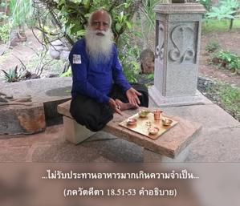
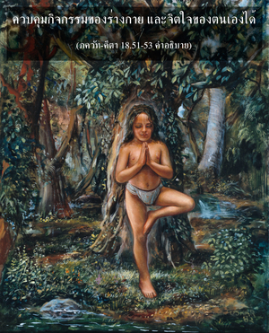

ได้รับความบริสุทธิ์จากปัญญา และควบคุมจิตใจด้วยความมุ่งมั่น ไม่ยุ่งกับอายตนะภายนอกเพื่อสนองประสาทสัมผัส เป็นอิสระจากการยึดติดและความเกลียดชัง เป็นผู้อยู่ในสถานที่สันโดษ รับประทานน้อย ควบคุมร่างกาย จิตใจ และพลังในการพูด อยู่ในสมาธิเสมอ และไม่ยึดติด เป็นผู้ปราศจากอหังการอำนาจที่ผิด ความยโสที่ผิด ราคะ ความโกรธ และการยอมรับสิ่งของวัตถุปราศจากความเป็นเจ้าของที่ผิด และมีความสงบ บุคคลเช่นนี้แน่นอนว่าจะพัฒนาไปสู่สถานภาพการรู้แจ้งแห่งตน



เมื่อบริสุทธิ์ขึ้นด้วยปัญญาเขาจะรักษาตัวให้อยู่ในระดับความดี ดังนั้น จึงเป็นผู้ควบคุมจิตใจได้และตั้งอยู่ในสมาธิเสมอ โดยไม่ยึดติดกับอายตนะภายนอกเพื่อสนองประสาทสัมผัส จึงเป็นอิสระจากการยึดติดและความเกลียดชังในกิจกรรมของตนเอง บุคคลที่ไม่ยึดติดเช่นนี้โดยธรรมชาติชอบอยู่ในที่สันโดษ ไม่รับประทานอาหารมากเกินความจำเป็น ควบคุมกิจกรรมของร่างกาย และจิตใจของตนเองได้ ไม่มีอหังการเพราะไม่ยอมรับว่าร่างกายเป็นตัวเขาเอง และไม่ปรารถนาที่จะทำให้ร่างกายอ้วนท้วมแข็งแรงจากการยอมรับเอาสิ่งของวัตถุต่างๆ มากมาย เนื่องจากไม่มีแนวคิดแห่งชีวิตทางร่างกายจึงไม่มีความยโสอย่างผิดๆ มีความพึงพอใจกับทุกสิ่งทุกอย่างที่ได้มาด้วยพระกรุณาธิคุณขององค์ภควานฺ ไม่มีความโกรธที่ไม่ได้สนองประสาทสัมผัส และไม่พยายามได้มาซึ่งอายตนะภายนอก เมื่อเป็นอิสระจากอหังการโดยสมบูรณ์และไม่ยึดติดกับสิ่งของวัตถุทั้งหลายนั่นคือระดับความรู้แจ้งแห่งตนของ พฺรหฺมนฺ ระดับนี้เรียกว่า พฺรหฺม-ภูต เมื่อเป็นอิสระจากแนวคิดแห่งชีวิตทางวัตถุเขาจะไม่มีความเร่าร้อน ได้อธิบายไว้ใน ภควัท-คีตา (2.70) ว่า
อาปูรฺยมาณมฺ อจล-ปฺรติษฺฐํ
สมุทฺรมฺ อาปห์ ปฺรวิศนฺติ ยทฺวตฺ
ตทฺวตฺ กามา ยํ ปฺรวิศนฺติ สเรฺว
ส ศานฺติมฺ อาปฺโนติ น กาม-กามี
“บุคคลผู้ไม่ถูกรบกวนจากความต้องการที่ไหลออกมาอย่างไม่หยุดยั้งนั้น เหมือนกับแม่น้ำที่ไหลลงสู่มหาสมุทร ซึ่งเต็มเปี่ยมแต่สงบนิ่งอยู่ตลอดเวลา เขาผู้นี้เท่านั้นที่ได้รับความสงบ ไม่ใช่บุคคลผู้ดิ้นรนเพื่อสนองความต้องการเหล่านี้”